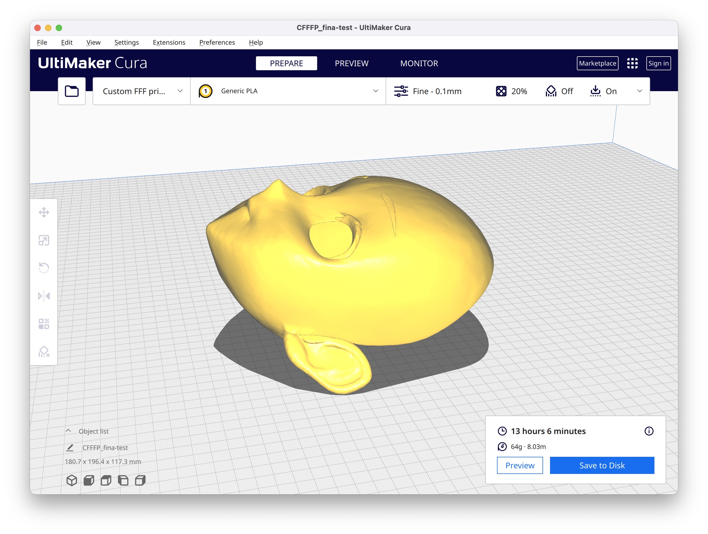

KIGURUMI 不完全手册
词条：Kigurumi
这是一个记录 Kigurumi 折腾过程的手册，从入门、自制、活动、社区、店铺等，还有一些经验，希望能覆盖到 Kigurumi 玩家活动的方方面面。
- 👉 在线阅读本手册 网站 how.kig.land
- 👉 Github 找到本手册 u-u-z/kigurumi
引导
- 🐣 快速入门 - 如果你还没有入手第一个 Kigurumi（或者还在观望），可以来看看这里，这里可以提醒你入门需要知晓的事项
- 🏠 工坊与店家 - 这里收录了一些 Kigurumi 工坊与店家，如果你想要入手一件 Kigurumi，可以来看看这里。
- 😋 开源/免费模型（🚧）- 建设中 🚧
- 🐱 活跃玩家（🚧） - 有些大佬 ID、链接收录在这里
- 🔧 自制篇 - 这里有一些自制的经验分享，如果你想要自制一件 Kigurumi，可以来看看这里。
- 🎈 群组社群（🚧） - 如果你想加一些 Kigurumi 群组、讨论群、Discord。
- 🎡 活动篇（🚧）- 这里将会收录一些活动
置顶经验
友情链接
这里有其他的友站链接，任意门，有其他的玩家经营的地方，可以去看看
排名不分先后
- KigerHub - 由 kiger 建立的好看，有用，开放的二次元 Kigurumi 门户站。致力于帮助新人，促进交流，让 Kigurumi 获得更多人的认可。
- cnkigurumi - 这是一个为爱发电的小网站 “希望可以为你带来快乐”
- kigguide - a small site dedicated to the kigurumi subculture.
- openkig - Come and share your Kig creations with us on our facebook page! Read More. Downloads. Download a mask and 3d print it up!
- kigurumi-animegao.fr - Hhosted and developed by Odd_HD in collaboration with Schizu_Emyu to regroup the informations related to the kigurumi hobby.
帮助我们
这个手册是开放的，任何人都可以参与编辑、完善、改进、提交、发起 Pull Request。
如果您想 删除/修改 本手册的某些内容（或者冒犯了您）
🙏 如果有冒犯您的内容请及时告知，我们将纠正，也感谢您能够参与我们。欢迎在本仓库中提出 issue！或者通过 Github 仓库的所有者的 Profile 联系到有权限修改的贡献者！我们会积极的修改这个仓库，如果是其他人意志 Fork 了本致使 “分支内容” 无法修改，也积极联系分支仓库所有者！
参与者 & 贡献者
旧版内容（2021 年前）
其他
网站使用 🦀️ Rustacean （Rust 语言开发者们）热爱的 mdbook 在 Github Actions 中构建，托管在免费的 Cloudflare Pages 平台服务，感谢你们！
⚡ 快速入门
💾 推荐阅读：《Kigurumi - 萌娘百科》词条（很多玩家通过搜索引擎找到的第一份资料）
这里仅提供 “人偶扮演” 日语：着ぐるみ 的入门参考，可能不适用于 “兽装”（Furry）。
🎯 准备
Kigurumi 玩家入门的原因与方式各不相同：有的喜欢更加二次元风格的 Cosplay，有的想尝试追求有趣、刺激的体验。有着 3D 艺术建模经验的玩家可以自己完成 Kigurumi 头壳的素体设计，具有 Cosplay 丰富经验的玩家能够制作道具、服饰，修剪 Kigurumi 头壳的假毛（假发）制作造型。
主要的准备过程：
- 确保足够多的财力（>= ¥5000 CNY），避免投入过半破产；
- 确定一个目标角色；
- 定制/定做 Kigurumi 头壳；
- 定制/定做 Kigurumi 皮（紧身衣）；
- 采购该角色的服饰（Cosplay 服装）、道具、饰品；
- 尝试，试穿、调整着装后的样式、状态；
- 练习（表演技能） POSE，探索适合的拍照动作、姿态；
🐱 角色
从一个角色开始，由这个角色制造的 Kigurumi 头壳将陪伴你很久 ···
- 当代流行的 “人气角色” 将有助于快速得到关注；
- 选择 “自己喜欢的角色” / “自设” 保持活跃，也是可行的；
Kigurumi 究竟算不算是一种「Cosplay」不必深究 ···
💰 财力
Kigurumi 在一些报道中被称为“破产第四坑” 的存在，保持爱好的过程 ❤️ 是需要持续投入时间、经历、财力的。一些需要提前做好心理准备：
可能需要投入达到 ¥5000 （CNY），在没有相关技能、能够屏蔽一些成本，完全依赖采购成品道具、Kigurumi 头壳、服饰的情况下（截止 2022 年）。
- Kigurumi 头壳制造一般在 2500 元 -- 5000 元之间不等，取决于难度、制造速度；
- Kigurumi 皮的定制价格一般在 400 -- 800 元左右，取决于布料、拉锁位置、衣物细节；
🫠 闷热
Kigurumi 的过程体验起来是十分闷热的，Kigurumi 头壳内部只有很有限的通风。
虽然一些 Kigurumi 头壳制造店家会在制品中加入风扇增加散热效率。
😄 其他
还有一些持续投入：
- 衣物（
妈妈会问你的衣柜里为何有很多女装👚）; - 需要掌握（小学二年级）手工技巧，维护修复道具、物件；
- 学会穿搭、打扮，寻找可爱、有趣的道具（例如：发夹、头饰、随身饰品等）；
- 出片、游场 和 Cosplay 玩家一样需要做足准备；
- 良好的饮食习惯，保持好的身材，避免发福；
- 乐观的面对各种挑战、解决问题；
- 可能会被一些不明人士（性）骚扰；
上述情况是玩家在经历中比较常见的，每个人的目的、方式、做法不同；
💸 初次采购
⌛️ 漫长的等待：由于很多类似这样的 均为 C2C 业务产能有限，Kigurumi 头壳制作过程时间需要 1-3 个月，甚至“产能不足”的情况下需要等待半年到一年。
💬 什么是有效沟通？
任何定制服务的行业从业者，都不会喜欢 “乱改需求的甲方”。Kigurumi 用品的制作大多是量身定制的，任何确定需求后的修改给双方带来的麻烦是无比巨大的！建立良好有效的沟通对于买卖双方十分重要。我们执行采购行为时需要：
- 认真的组织语言；
- 清楚、详细但不啰嗦的描述所表达的内容；
- 尊重每一个人；
- 学会提问，有效的提问（很多店家还是对认真可爱的孩子耐心十足的 ^_^）；
- 在需求确定后，任何的修改，请带着“需要支付额外修改成本”的准备、觉悟；
笔者并非从事 Kigurumi 用品制作，但是从事定制服务行业。这是从买家、卖家立场共同思考的想法。
🏠 从 Kigurumi 头壳制造工坊店家采购头壳
决定 Kigurumi 头壳样式
按风格区分，主要有：BJD 风格与 二次元风格（本文档暂时主要描述二次元风格 Kigurumi 头壳）；
按结构区分，常见的工坊店家提供：半面、3/4头、全头；
选择风格、结构将决定了角色形式以及佩戴体验；
咱的头壳是半面头壳，目前遇到了 “后脑勺看起来是凹陷下去的，看起来十分奇怪” 的问题 ···
“如果没有什么其他癖好的话 3/4 的头壳 刚刚好” — 小林 泉
提供您的基本身体数据
漫画有 “五头身”、“六头身” 比例概念。恰到好处的头身比例将会为您带来更好的效果，同时也便于 Kigurumi 头壳更好的佩戴、固定。您需要准备这些数据：身高、体重、头高、头围、头宽、眼睛位置；
- 身高、体重：决定投身比例的基础；
- 头高、头宽、头围：通常情况下，Kigurumi 头壳的固定需要“下颌骨”与“头部顶骨”上方调节好厚度的海绵配合，这需要头高数据配合。
⚠️ 请务必按照店家的指导提供准确的数据，自行增减尺寸只会带来麻烦，甚至导致成品无法正常使用。
描述角色细节
🙏 为了避免翻车，请务必充足、完整、全面的描述角色的细节，与制作者建立认真、良好的沟通，有效的回应店家的提问非常重要！角色的细节包括，但不限于：
- 设定：越多越好的参考图，有助于让制作者快速搞清楚“要做什么”；
- 表情：可以先调查一下漫画中的人物表情，一个“恰到好处”的表情会让可爱值++（
比如高 chao 脸）； - 毛发颜色：会通过毛色“色卡”多次确认，由于拍照会存在一定色差，可能需要谨慎选择，多沟通；
- 风格：因为不同的漫画、插画、二次创作作品的作者表达形式、风格不同，需要有效的与 Kigurumi 制作者沟通好 角色的呈现风格。这可能将决定 Kigurumi 头壳的“脸型”；
- 素材：如果条件允许，有角色素材可以提供店家。例如“眼睛贴片”素材，可爱的眼睛可以为角色“赋予生命力”；
- 异形制作、装饰品物件：角色是很难免会避免存在头部饰品、异形的情况，例如：犄角造型、尖耳朵等。需要提前确定好，这些结构由买家准备或者置于 3D 模型中。
- 假发（假毛）：可以向店家申请色卡选色，也可以提供角色对应的 cosplay 假发来提供店家查看。“马尾”发饰的角色，可以根据个人喜好额外申请做成假发夹子。（一些玩家会热衷于自扎马尾，一些玩家觉得用老虎夹制作的假发单独取下大沥方便）
对于定制方发起的提问也要认真思考后作出有效回答。卖萌可取，务必适度。
确定购买、付款周期
Kigurumi 头壳的定制周期由于受到原材料价格、供需关系的影响，制作周期、产能的稳定性不是很强。需要玩家有足够多的耐心。一些定制工坊店家的开售机会也比较固定，需要多多的收集信息（本文档在后续章节将会提供更多信息）。 由于 “订单队列” 名额有限，一般制作周期有 1-3 个月不等，有些甚至遇到 “需要等半年多” 的情况。这些情况需要积极的与工坊店家沟通，确认工期，以及是否需要额外支付加急费用提高生产速度。
当然可以同一些 Kigurumi 玩家交流，了解当前周期的产能分布情况。对于制作生产速度、效果、质量的关系，是仁者见仁智者见智的，这充满着个人主观的想法、看法，请不要产生“存在关系”的无端联想。在建立良好的沟通的情况下，生产速度快的工坊店家制作效果也会很好。
付款事项一般分为：订金、尾款、加急费用（可选）；
作为购买者，我们需要清楚：快速、及时的付款是表现 “积极配合” 的最好方式，制作方由于接触大量业务、订单，对于没有办法积极付款、比较消极的购买者，反馈可能会是相对消极的。这会极大的影响订单流程的体验。
一些工坊店家会精心的为“金主”提供可爱的定金支付凭证！
耐心等待
之后是无尽的等待 ⌛️，这需要一些耐心。虽然在这个过程会充满着兴奋与期待。
🏠 从 Kigurumi 紧身衣店家采购“皮”
在下文中将会直接使用“皮”代表 Kigurumi 玩家所使用的紧身衣。
⚠️ 重要的事情说三遍：不要用皮直接碰魔术贴！不要用皮直接碰魔术贴！不要用皮直接碰魔术贴！
确认皮属性、样式、功能
默认情况下，皮是一件 “全身包裹” 的连体紧身衣，背部设有拉锁便于穿入。可选面部“开窗”方式决定是否漏出面部“便于良好的使用视觉能力”。覆盖包括手、足、头部，玩家需要根据自身需求与店家沟通。
皮的样式、属性功能主要包括：
- 颜色：肉粉色、肤色等基本颜色，当然这取决于角色设定或者目标效果。也有玩家会选择白色、黑色的皮。二次元角色玩家大多会选择 “肉粉色”；
- 面部开窗：可选择
露出面部、露出眼睛（也可以选择两个眼睛洞x）、面部全覆盖包裹等开窗样式； - 胸部制作：由于二次元角色设定需要，胸部可以进行额外加工，需要玩家提前调查角色的胸部尺寸与比例与店家沟通。需要额外胸部制作的主要从 “B 罩杯” 尺寸开始；
- 指甲制作：一些店家提供皮手部的指甲制作，可以选择指甲颜色、类型、长度等定制；
- 拉锁制作：一般店家支持多种不同的拉锁样式，以及在身体不同的部位开设拉锁。例如：
- 在手腕内侧开设拉锁便于在需要的时候使用手，避免污染手部皮；
- 在裆部开设拉锁，在卫生间时会比较方便；
- “异形”制作：根据角色设定或玩家实际需要，可以与店家沟通，在身体的任何位置对皮进行“额外的修改”，便于安装或穿戴道具；
采集身体数据
因为皮是完全贴身的，对于店家来说准确的身体尺寸、数据额外重要。
包括但不限于：性别、身高、体重、肩宽、上身长、胸围、腰围、臀围、内侧腿长、横档、脚腕、鞋码、内侧壁长、袖肥、手腕、掌围、中指长、头围、脖围、脸长。具体在与店家的沟通过程中
🙏 务必请认真准确的采集、测量这些数据，积极有效的与店家沟通。**不要因为自己不满意于自己的身材指标而瞒报数据，**这样做是愚蠢的，将会影响到实际效果，甚至无法穿上皮。
确定订单、付款
在基本的身体尺寸数据和皮的样式属性决定好后，与店家沟通下单就好。一般是一次性付清全部款项，制作周期相对 Kigurumi 头壳要快一些，一般 7-14 天 即可发货，额外是物流的运送时间。
👗 采购角色服饰
追求还原度是值得尊敬的，但也请根据自身情况注意避暑与防寒保暖 🙏
Cosplay 角色服饰
二次元角色主要以 Cosplay 服饰为主，比较容易确定搭配、样式，便于采购，无需在穿搭方面绞尽脑汁。适合快速入门，在初次采购的情况下是十分推荐的。
日常服饰
需要一些时间积累的穿衣搭配的经验积累（女装经验），在初期可以选择购买“套装”服饰，会存在撞衫风险，同时对身材也有一些要求。可爱即正义！
饰品
“恰到好处”的饰品在角色效果上十分重要，请不要忽视。当然也是需要一些时间与经验积累。
🔧 备品采购
对于刚刚入门的玩家，“备品”并非是必要的，因为需要一些工具的使用需要经验、掌握一些技巧。对于曾经有过 Cosplay 经验的玩家，这些备品应该是相对熟悉的。这里介绍主要的采购思路，未来将会在后面章节中开展介绍更多手工制作工具、耗材的详细介绍。
采购原则
- 以头壳生命周期维护为主：头壳 “化妆制作” 中所涉及的材料需要有所准备。例如：肤色漆料（主要以罐装漆为主）、眼部纱网、眼部贴片绒面相纸、嘴部红色布料、眼线、薄 EVA 泡绵、高密度海绵、魔术贴等。头壳假毛的维护主要有木梳、发网、护理液等。维护头壳固定结构，需要长期维护的主要以胶、粘合剂为主，如：热熔胶枪、热熔胶棒、无痕胶、AB 胶等。一般在活动进行前维护，支撑一次活动的生命周期，并准备一些便于携带的备品避免突发、紧急情况；
- 考虑活动方式、场地：单次活动前的取决于玩家“更喜欢参与”的活动类型，例如：游场出街、正片拍摄。从 “效果”、“便携性”、“成本” 等多个角度进行选择。一般情况下：追求效果会带来随之而来的成本与极差的可便携性，便携性的道具可能不会带来很好的拍摄效果，但是有助于提高游场、出街、店铺营业等需要“高实时性”场景效果；
- 利于交互与作品内容表达；
通用
- 热熔胶枪、热熔胶棒：手作、手工必备！应急情况之“良药”（注意避免烫伤！）在任何时候你都会需要它。在出片、游场时必备！在别人的物品出现问题时，拿出热熔胶的你一定是人群中的焦点！总之，这是一个非常非常非常必要的备品、工具，你可以使用它解决大多数问题。
假发、假毛
大多数的 Kigurumi 的假毛材质与 Cosplay 假毛相同，维护工具主要有：
🏠 工坊与店家
- 更新时间：2021/01/26
- ⚠️ 排名不分先后
| 店家名称 | 店长/制作者 | URL | 营业状态 | |
|---|---|---|---|---|
| GKO | 豪華王 | http://goukaou.blog131.fc2.com/ | 1322698109 | true |
| 河妖工房KIGURU | 河妖 | https://shop339252004.taobao.com | 745134998 | true |
| 幻胧挽歌 兔子kigurum | 兔子 | https://shop236878671.taobao.com | 2567908524 | true |
| 虹音KIGURUMI实验室 | 老板娘 | https://shop331326971.taobao.com | 3216202749 | true |
| 壳反应Aniplus | 关谷 | https://shop567949612.taobao.com | 895363654 | true |
| NFD新颜玩偶New Face | 新颜玩偶（Unknown） | https://shop116616022.taobao.com | 77126188 | true |
| KIGURUMI雷击工坊 | 伪哥（raigeki） | https://shop100905188.taobao.com | 77126188 | true |
| 魔形兔与原创设计 | 游弋 | https://shop202579386.taobao.com | 368072544 | true |
🐯 活跃玩家
收录原则说明
「活跃玩家」的收录，本着开放、中立为原则，希望大家看到 Kigurumi 玩家更加优秀的创作。以下内容为“收录原则”，在未来收录的过程中会进行更加完善的调整。
欢迎的
- 参与社区活动、积极活跃的玩家；
- 拥有社交 SNS 在线 ID，关注/跟随数超过 1000 的；
- 拥有单次发布内容点赞数超过 150 作品的；
- 受欢迎、优秀的 Kigurumi 玩家；
不欢迎的
- 存在大量争议、引起过重大矛盾的（导致当事人或相关人员产生重大损失的）；
- 存在 NSFW 内容，且涉及：恐怖、政治相关的；
- 具有严重营销性质、内容涵盖极端思想、内容具有极其强烈价值导向的；
如果您想删掉对您的收录
🙏 很抱歉对您带来了困扰！对仓库内容的修改在首页中有所说明。我们会积极配合 👌
🛠 自制篇
- 关于通过 FDM 制作头壳的小技巧 --作者：@q2967922096
- 在 Blender 中通过 MMD(PMX)/VRM 制作头壳 --作者：Remi IO
- 自喷漆 --作者：Remi IO
- 参考资料：假发造型
关于通过 FDM 制作头壳的小技巧
本章节由 @q2967922096 提供；
- 当打印机太小的时候可以把模型拆开打印，但是打磨会变得很麻烦；
- ab胶可以用来粘拆开打印的头壳，也可以用来填补一些变形的地方；
- 廉价的快干小补土可以用来填补打印件表面的层纹（fdm打印机的层纹会比光固化打印机的层纹更多更深）
- 海绵砂纸可以方便的抛光一些普通砂纸磨不到的地方
- 电磨机加植绒砂纸可以快速磨平较大的凸起
- 水补土可以方便找出和填补一些细小的瑕疵（推荐使用灰色更方便找出缺陷）
- 可以用白色的水补土当底漆（至少作者是这样用的）
- 油漆可以使用郡士的c111混入少量的c112
- 油漆的稀释剂可以用廉价的香蕉水替代（也可以用来洗喷笔）
在 Blender 中通过 MMD(PMX)/VRM 制作头壳
本文内容简单介绍 Blender 中通过 MMD(PMX) / VRM 模型制作用于 3D 打印的 Kigurumi 头壳模型的可行方案（总结过程，暂时不包括详细制作过程）

🔧 所需工具
主要工具：Blender - 用于模型编辑
- Blender v3.5.0
- Blender 插件（用于 VRM 格式模型）： VRM-Addon-for-Blender
- Blender 插件（用于 MMD PMX 格式模型）：MMD Tools
模型来源：可通过 VRoidStudio（一个二次元风格捏脸系统）或 MMD 资源站
🍞 所需技能
- 基本的 Blender 使用（无须精通）👉 《Blender 手册》
- 了解 Blender 基本使用流程：能够编辑场景元素、修改 Object 的属性
- 了解 Object 可以通过 Vertex Group、Shape Keys 控制表情、“神态”
- 了解 Blender mesh （bmesh）常识，能够在 editor mode 中完成对多边形点线面基本操作
- 了解 Blender 常用修改器用途，如：Remesh、Solidify、Decimate、Subdivision Surface 等
- 熟悉 Blender UI 能够正确安装、使用插件功能，如：Mesh: 3D-Print Toolbox 插件
🚧 实施流程
- 安装 “所需工具” 中的 Blender 插件，确保插件能够正常运行
- 导入 VRM / PMX 模型文件，同时，清空场景中无用对象
- 在 Sence collection 中，找到与面部相关的 Object（适合于制作 Kigurumi 的 Mesh）
- 新建 Collection，在保留 Vertex Group、Shape Keys 的情况下，清理不必要的 Objects（由于 MMD / VRM 有骨骼等概念被导入 Blender）
- 通过改变 Vertex Group、Shape Keys 的 item 数值调整所需的表情
- “缩放” 调整至所需大小并 “应用缩放（control+a）” 至该模型（确保距离一致性）
- 在编辑模式中，通过 “By Loose part” Separate 该模型，使其能够拆分出需要的 “头模”
- 合并所需 Object（一此时，还没有厚度，同时需要额外处理 Mesh 拓扑结构）
- 删除纹理贴图（为了进一步使用修改器调整 Mesh）
- 使用 Subdivision Surface 修改器增加网格密度并使模型变得更加光滑
- （调整结构）
- 使用 Decimate 修改器降低 Mesh 面数
- 使用 Solidify 修改器为头壳增加厚度
- 使用 Remesh 修改器重构结构，重构后模型将易于 3D 打印
- 通过 Export 导出为 STL 格式文件
.png)
... 好像写了点啥，又好像什么都没写
自喷漆
对于个人玩家 / 自制玩家而言，喷漆也许是挺让人摸不到头脑的事情，
需要一些经验、实践来掌握这个技能。
本文是一次喷漆过程、遇到问题的记录，能覆盖到大部分问题。
😉 你也许一个小时就会了
🔞 未成年人请在监护人的陪同下完成相关操作
⚠️ 一些提示
- 做好防护！
- 保持良好的心态 —— 因为有很多补救措施
- 没有必要，喷漆追求 “一次喷好” 一步到位，技艺可以慢慢提高
- 只是制作 Kigurumi 不必追求完全的装备（差生文具多）
⛑️ 防护用品
- 3M 防毒面具 6200 套装 （喷漆工作者常用，推荐）
- 3M 防喷溅眼镜
- 丁腈橡胶手套 / 一次性手套
- 防水劳保套袖
注意：请认真阅读防护用品使用说明，确保正常使用，及时更换耗材 ⚠️
🍞 所需材料
考虑到个人（非模型玩家）准备喷枪 / 喷笔、模型工具、调漆、气泵及使用存在一定门槛、并且复用性较低。本文只描述使用自喷漆（使用喷罐）的过程。另外，喷涂着色作业是灵活多变的，关于所使用漆料的价格、优劣，也能够搜索到很多讨论。每个人观点不同，材料内容仅供参考。
关于非自喷罐、调漆、气泵的喷涂作业，将会在其他章节中描述
注意：使用自喷漆罐，请认真阅读使用说明，请勿刺穿、挤压、火烤自喷漆罐，避免发生爆炸 💥
- 自喷漆：肌肤色
- 三和 313 浅粉色（便宜）
- 郡士 s111 半光泽肌肤色
- 郡士 s112 半光泽肌肤色
- 自喷漆：舌头、嘴部
- 三和 350 捷达红（便宜）
- 郡士 63 光泽粉红色
- ···
- 底漆：
- 郡士 / 田宫 水补土
- 三和 40 白色（便宜）
- 原子灰（可选）
- 消光漆（哑光油）
- 三和 191 哑光油 （便宜）
- 田宫 TS-80 消光透明保护漆
- 补救用品（推荐备齐）
- 砂纸：300 目、500 目、800 目、1000 目、2000 目，各准备 2-3 张
- 喷漆环境：
- 光线正常，避免过于阴暗
- 湿度不推荐高于 70% 温度 20-30 度均可（建议仔细阅读喷罐产品说明）
- 不会影响到他人正常工作与休息、造成纠纷
- 楼顶天台、消防楼道
- 室外风向，喷漆作业者应置于上风向（避免喷一脸）
- 室内，有条件可准备喷涂作业负压箱，若无，为了家人的身体安全与健康，建议避免在室内喷涂作业。另外室内作业应避免“窝风”（由于漆料喷出干燥后气流带动干燥后的漆料附着到模型表面形成颗粒）
喷漆前准备
前置条件：正确使用防护用品 && 正确使用作业场地。
喷漆前，应仔细阅读说明，均匀摇晃自喷罐，确保喷罐中的漆料均匀。
- 了解、悉知——正确的使用防护用品，若感到不适及时停止作业，不适严重应及时就医。
- 了解、知悉——正确的喷罐使用方法，如：距离着色面 15-20 cm 在着色面外按压喷罐口后扫喷，由于文本不能很好的表达自喷罐使用过程，推荐通过视频教学学习。
- 了解、知悉——漆料附着至物体表面前经过不同湿度、温度的空气，附着后的干燥程度、状态会有不同的表现，请在喷漆前完成喷涂测试后，根据实际情况进行正式作业。
喷漆前，对 Kigurumi 壳体表面完成清洁工作
- 可通过打磨实现表面更好的附着漆料
- 清洁干净，避免油污
若存在轻微伤痕、凹陷，可通过水补土补充，可视情况使用砂纸打磨实现表面平整。若凹陷严重，可通过原子灰补充，使用原子灰后应使用砂纸打磨，使其原子灰与凹陷伤痕周围“融合”。（水性原子灰比起油性原子灰使用更加方便）
喷漆作业
- 使用自喷罐喷漆时，先摇匀喷罐，先在其他物体上喷漆，确保喷罐中的漆料均匀。
- 扫喷、少量多次，不要一次喷太多，避免漆料流淌、滴落。
- 扫喷应在模型外部（为了确保效果，浪费一些是正常的）按下喷口开始喷漆，扫过模型，松开喷口。
- 逐行喷涂，避免遗漏。每一行的喷涂覆盖应该有 50% 的重叠。
- 确保喷罐气压稳定，若喷罐气压不稳定，应停止喷涂，更换喷罐。
- 喷涂过程中，应保持喷罐与模型的距离，避免喷罐与模型的距离过近，造成漆料流淌、滴落。
- 注意喷涂作业过程中的通风，若在室内环境，应尽量避免喷涂后在空中干燥的漆料附着到模型表面，造成颗粒。
- 若出现 颗粒、“鼻涕”、“吐痰” 现象不必害怕，可以通过打磨、水补土、原子灰、消光漆等手段进行补救，请保持正常心态。
- 喷涂作业过程中不要随意触碰模型表面，避免造成指纹、油污等。
- 喷涂作业过程中不要随意撤下、摘掉防护用品。
- 不要在大雨中喷涂。
- 喷涂完整一层后，应等待 3 分钟，确保漆料表面干燥后再进行下一层喷涂。
- 由于不同品牌漆料漆性不同，三和漆料建议等待 3 分钟，郡士漆料建议等待 5 分钟。
- 若喷涂过程中有出现未完整覆盖的表面，请勿直接喷涂，应等待该层漆料干燥后，通过下一层的喷涂过程覆盖。
- 喷涂顺序应该是：底漆/水补土 -> 肌肤色漆（偏粉色）-> 肌肤色漆（偏黄色）-> 清漆（消光/哑光）/保护漆。
补救措施
颗粒（“橘皮”）、“鼻涕”、“吐痰”
- 颗粒/橘皮：使用三和漆料和喷涂新手的常见现象，若不严重，等待喷涂漆料干燥后，请使用 1500/3000 目砂纸打磨，直到颗粒消失，补充色漆或消光漆。若严重，可使用 800 目砂纸打磨，补充色漆或消光漆。
- “鼻涕”/“吐痰”：可能是自喷罐气压不稳或没有正确按压喷口导致，处理方法与上述相同，若不严重，等待喷涂漆料干燥后，请使用 1500/3000 目砂纸打磨，直到颗粒消失，补充色漆或消光漆。若严重，可使用 800 目砂纸打磨，补充色漆或消光漆。
关于局部补充漆
- 确保颜色（或各颜色的喷涂量）正确
喷漆后处理
- 参考补救措施章节，处理喷涂过程中出现的问题
- 完成基本喷涂作业后，可根据需要厚喷消光/光油 根据需要打磨，完成喷涂作业
- 水贴纸贴合后也可再次进行消光漆喷涂配合 3000 目砂纸打磨避免贴纸周边“棱角严重”
参考资料：假发造型
资料整理：@AlienHo 📒 notion 笔记
所需物料
- 假发“毛胚”
- 头模（可能需要手动加大尺寸）
- 尖尾梳
- 牙剪、剪刀
- 玉米须夹板、直板夹或卷发棒
- U 胶
- 发蜡/定型喷雾
修建定型假发“毛胚”
制作发片


- 发片制作+用途 贴片如何才能自然？|假发造型基础技巧 毛娘基础课（2）- bilibili
- 不同的假发发片制作方法及用途介绍教程，新手毛娘和打算自己做造型的宝子建议看完 - 半雨造型 - bilibili
造型制作
基础造型
发缝制作
反翘制作
层次刘海制作
美人尖制作
呆毛
其他细节
群组社群
记录目前已有的 在线聊天室、群组，排名不分先后
商家群组
- 幻胧挽歌 兔子のkig工 - 群号:832799677
- Kiwata Kigurumi木棉交流群 - 群号:1078737757
- kigurumi研娃坑 - 群号:612851442
- 魔形兔与原创设计 - 群号：716052799
地域性群
- 苏州：
- 苏州kigurumi - 群号:99230902
- 哈尔滨：
- oHaYoo 审核群 - 群号:437919635
知名爱好者自有群组
- 麻衣楠楠应急管理仓库 - 群主推号：@SupermayiU - 群号：459880050
AWESOME KIGURUMI!!
《穷鬼的 Kigurumi 折腾日常》我觉得应该尝试自己研究一下，尽管这样做成本依旧很大 ···

快看，我订的 Kigurumi 头壳到手了！
尝试研究、研究、折腾、折腾这个头壳，把资料总结在这，可能会咕咕咕 ··· （目前卡在 3D 建模问题上😂）
仅限 二次元 Kigurumi
目录（暂时可能不是）
- 壳体制作
- 建模设计
- 脸型、肤色
- 目部、面部
- 异形
- 头顶、角：
- 头侧、耳朵：圆耳、尖耳；
- 模型铸造（工艺）
- 3D列印
- FDM - 热熔沉积成型（传统），材料：PLA、ABS （需要打磨）
- SLA - 光固化（工业级），材料：树脂
- 我是在哈尔滨东直路那边找到一家做3D打印的厂子，他们家打印价格按克数收费，0.7~1元/克，我新搞的壳子 0.7 元 /克的就足够，一个3/4头壳大概 700g 不到；
- 打印过程时间比较长，我新打印的头壳不到 700g 的东西，也需要 22个小时；
- 打印后需要拆掉支撑结构，清洗，据说需要用酒精吧（日后确认修改）；
- 弄干净后需要再放到光固化箱中进行固化；
- 3D 打印 很有可能翻车，我的就翻车了，有一点瑕疵好在可以补，于是又隔了一天才取到；
- 粘土
- 石膏
- 风干乳白胶
- 3D列印
- 打磨
- 工具：锉子、砂纸、海绵砂、水砂纸；
- 水砂纸：60目、120目、180目、280目、320目、400目、600目、800目、1000目、1500目、2000目、2500目、3000目、5000目，根据自己需要购买即可，打磨过程中水砂纸可以蘸水打磨，需要从目数小的砂纸逐级增加目数；
- 小目数的砂纸是比较需要的，有的【3D打印厂商】在打印后会帮助你用120目砂纸打磨好，但是也可能出现打磨不到的地方需要自己处理；
- 砂纸打磨目数最高到1500目就足够了，如果你想要“光头”的话，可以尝试 3k目-5k目 (^_^)；
- 有的头壳店家基本打磨到 600 就拿去喷漆了；
- 喷漆
- 亚克力漆
- 法郎漆
- 硝基漆
- 喷漆工具：喷漆笔、喷枪、气泵；
- 打磨光，上一层白，上一层白一点的肤色，粉底扫一点晕红，上一层消光；
- 油漆到了···在咕啦！
- 建模设计
- 化妆、后期加工
- 固定、支撑结构
- 松紧带/弹力带（3/4头），魔术贴
- 海绵支撑
- 胶：热熔胶、瞬间接着剂
- 眼线、睫毛、眉毛
- 腮红
- 其他纹理
- 眼睛
- 相纸（绒面）（防水可打印贴纸）
- 网眼纱布、透明片
- 嘴、牙齿
- 可塑塑料板（加热后变软）
- 漆皮面料
- 聚苯乙烯板 / EVA 板
- 假毛
- 固定结构
- 造型
- 耳朵
- 舌头
- 高密度泡沫板：切好后喷漆；
- 固定、支撑结构
消耗品及清理
- 清理假毛；
店铺
出街备品
- 包包：随着角色搭配一个包包、手袋，便于携带物品；
- 写字板：由于无法发出本音，可以用液晶写字板、iPad、速写本与笔用于表达；
一些参考
一些私域流量号
在可以采购物品的店铺（大陆）
KIG Cosplay 用假毛
- 依贝儿cos动漫假发；
鞋子
- 南在南方；
JK制服
- 啥都有vi的小店；